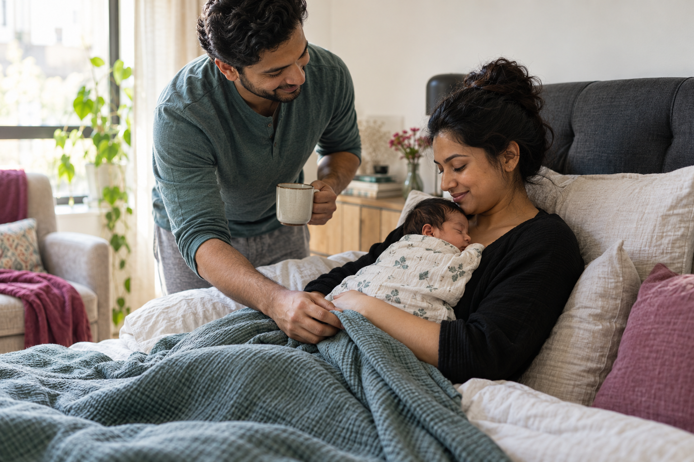
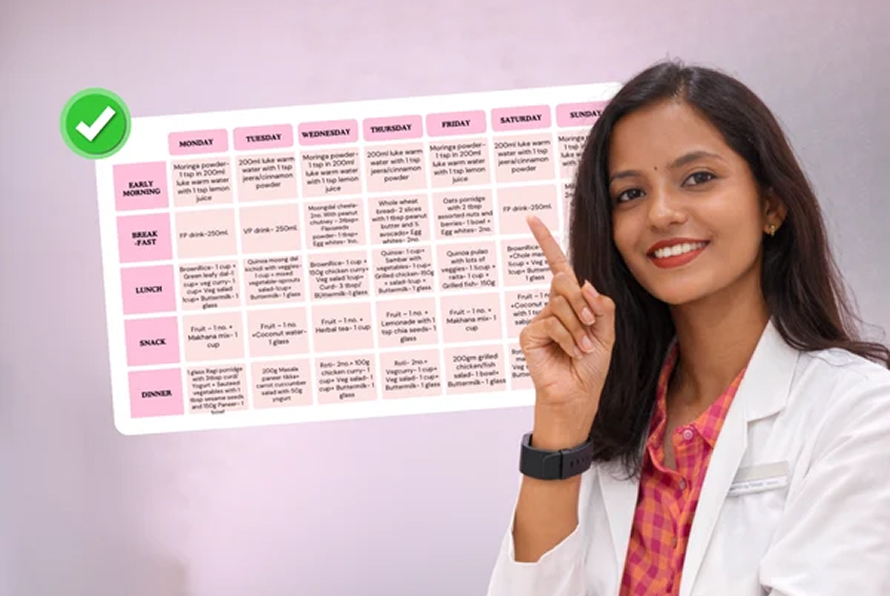

Strength & confidenceRegaining strength and confidence after childbirth.
POSTPARTUM RECOVERY
The postpartum phase brings physical, hormonal and emotional changes. Get personalised nutrition, recovery guidance, gentle movement and emotional wellness support to help you navigate the transition into motherhood.
Recovery
Postpartum care
Support
Care for your recovery journey
Whether you've recently delivered or are navigating the challenges of early motherhood, our program helps you focus on your recovery and wellbeing.
Postpartum recovery is not just about getting back to your previous routine. It's about giving your body and mind the time, care and support they need after childbirth.
Real Mothers. Real Recovery Journeys.

Strength & confidenceRegaining strength and confidence after childbirth.

Nutrition & feedingFinding a sustainable nutrition routine while breastfeeding.
 Emotional wellbeing
Emotional wellbeingNavigating emotional changes after delivery.
 Gradual movement
Gradual movementReturning to movement gradually after a C-section.
Building confidence in the transition to motherhood.
Understand your recovery, health concerns and individual needs with appropriate medical guidance after delivery.
Get nutrition guidance focused on recovery, energy, nutritional needs and breastfeeding requirements where applicable.
Gradual, medically appropriate movement to help rebuild mobility, flexibility and strength as your recovery progresses.
Psychologist-led support to help you navigate emotional changes, stress, motherhood adjustments and postpartum mental health concerns.
Build sustainable routines around rest, nutrition, self-care and the demands of caring for your newborn.
Stay connected with your care team through regular check-ins, progress monitoring and personalised guidance.
Expert Advice for Your Postpartum Journey

Women’s Health Specialist

Medical Director

Reproductive Endocrinologist

Embryology Specialist

Fertility Specialist
Doctors, nutritionists, movement specialists, counsellors and care coordinators — one team, assigned to you.
Medical Director
Reproductive Specialists
30+ Years of ExperienceReproductive Endocrinologist
Reproductive Specialists
12+ Years of ExperienceHead of Embryology
Embryologist
13+ Years of ExperienceWomen’s Health Specialist
Reproductive Specialists
18+ Years of ExperienceFertility Specialist
Reproductive Medicine
15+ Years of ExperienceYou can explore the program after childbirth. The appropriate starting point and activities depend on your delivery, recovery and doctor's advice.
Yes, the program can be adapted to your recovery needs. Exercise and movement should only begin with appropriate medical clearance.
The focus is on nourishment, recovery and sustainable lifestyle habits. Weight management can be considered gradually when medically appropriate.
Nutrition guidance can take breastfeeding requirements into account, helping mothers understand their changing nutritional needs.
Yes. Psychological support can help mothers navigate emotional changes, stress and challenges associated with the transition to motherhood.
No. While the first 40 days are an important recovery period, physical and emotional recovery can continue for several months. Support should adapt to individual needs.
Every postpartum situation is different. Speak with our team to understand the programme and whether it may be appropriate for you.
Book discover a callPOSTPARTUM RECOVERY
Give your recovery the attention, nourishment and expert support it deserves.